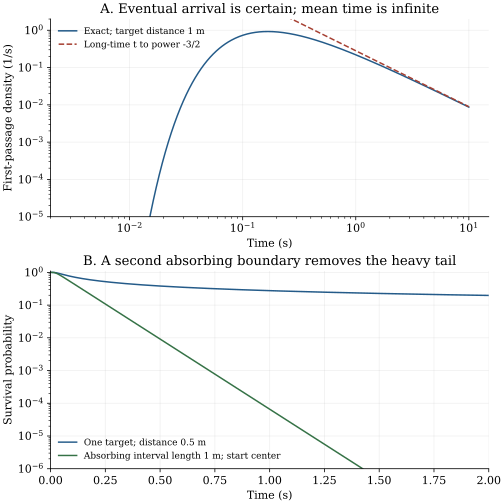

Chapter 20 · Lectures 23–24
First passage, absorbing boundaries, and renewal
A diffusing searcher reaches a target with probability one, yet its mean arrival time can be infinite. A finite simulation will still print a finite average of its successful arrivals. To decide whether that average answers the intended question, distinguish eventual success, the distribution of the first success time, censored observations, and a mean conditioned on success. Absorbing boundaries make these distinctions mathematical rather than verbal.
Based on lecture 23 and lecture 24. Both full caption tracks were read. One lecture-23 frame was sampled at 1355 seconds, with low-resolution notation; lecture-24 frames were not inspected. Added proofs check the half-line law, velocity-dependent absorbing condition, finite-interval backward equations, and simulation bias. Text, sampled visuals, and independent audio coverage are distinct; no full audiovisual review is claimed.
20.1 Repeated crossings and a first stopping event L23 0:22
A crossing counter records every passage through a threshold. A first-arrival clock stops at the earliest passage. Their expectations need different probability laws. For the finite-speed process of chapter 19, let $N_0(T)$ count crossings of the starting point during the open time interval $(0,T)$, excluding the initial presence at zero. The velocity magnitude is $v_c$, so the crossing flux through zero at positive time is $v_c\rho_{\mathrm{int}}(0,t)$. The front atoms are not at zero for positive $t$ and create no later origin crossing. The expected count is therefore
$$ \mathbb E[N_0(T)]=\frac12\int_0^{\nu T}e^{-u}[I_0(u)+I_1(u)]\,du.\tag{20.1}$$This follows by substituting $r=v_ct$ in the interior density (19.3), multiplying by $v_c$, and changing variable to $u=\nu t$. The same path may contribute many crossings. At long time the modified-Bessel asymptotic $e^{-u}I_j(u)\sim(2\pi u)^{-1/2}$ for fixed integer $j$ yields $\mathbb E[N_0(T)]\sim\sqrt{2\nu T/\pi}$. This last step uses the positive-real large-argument expansion in DLMF 10.40.1; integrating a $u^{-1/2}$ tail gives the square-root growth. Finite velocity makes the crossing count locally finite, whereas a Brownian level can have infinitely many recrossings after a hit. The first-arrival problem remains meaningful for both.
For a process $X(t)$ and a target set $A$, define the first hitting time $\tau_A=\inf\{t\geq0:X(t)\in A\}$, with value infinity if the target is never reached. If the initial state lies in $A$, this definition gives zero; a positive return requires a different convention that excludes that initial visit. A stopping time means that deciding whether $\tau_A\leq t$ needs only information available up to $t$. The target geometry and path continuity determine whether the event is a hit, a crossing, or an overshoot.
20.2 Certain arrival with infinite mean time L23 17:11
Take one-dimensional Brownian diffusion $X(t)=\sqrt{2D}W(t)$, starting at zero, with $D\gt0$ in square meters per second and standard Wiener process $W$ of variance $t$. The target is $a\gt0$ meters away and there is no left boundary. Let $\tau_a$ be its first arrival. Define survival $S(t)=\Pr(\tau_a\gt t)$ and the density $f_a(t)=-S'(t)$ for positive time.
Reflect a Brownian path about $a$ after its first hit of $a$. The strong Markov property and symmetry of future increments preserve its law, pairing paths that hit and end below $a$ with paths ending above $a$. Thus $\Pr(\tau_a\leq t)=2\Pr(X(t)\geq a)$. Integrating the centered Gaussian endpoint density gives the complementary error function, defined by $\operatorname{erfc}(z)=2\pi^{-1/2}\int_z^\infty e^{-u^2}\,du$. Differentiation gives the displayed density. As $t\to\infty$, the argument tends to zero and $\operatorname{erfc}(0)=1$, proving total mass one.
At large time $f_a(t)\sim a(4\pi D)^{-1/2}t^{-3/2}$. Multiplying by $t$ leaves a nonintegrable $t^{-1/2}$ tail, so its first moment diverges. At zero the exponential suppresses every power singularity, so the divergence comes entirely from late arrivals. Equivalently, $S(t)=\operatorname{erf}(a/\sqrt{4Dt})\sim a/\sqrt{\pi Dt}$ and $\mathbb E[\tau_a]=\int_0^\infty S(t)\,dt=\infty$. ∎
The reflection step is developed in Pitman's Berkeley lecture 17, pages 17-2–17-3. The ordinary propagator $G(x,t)=e^{-x^2/(4Dt)}/\sqrt{4\pi Dt}$ counts paths with any number of earlier target visits. The absorbing density on $x\lt a$ is instead $G(x,t)-G(2a-x,t)$; integrating it gives survival and differentiating its lost mass gives (20.2). This image subtraction works because reflected Brownian increments have the same law and the zero-density boundary enforces killing.
The mode of (20.2) is $a^2/(6D)$, found by setting the derivative of its logarithm to zero. It is finite even though the mean is not. A quantile is another finite measure of typical arrival. The distribution is a one-sided stable law of index one half, connecting this first-passage calculation with chapter 4. None of these typical scales makes a truncated sample average an estimator of a finite population mean.
20.3 An absorbing boundary must respect the velocity state L23 16:28
For the telegraph process, the target at $a\gt0$ cannot be reached before $a/v_c$. A scalar zero-density image boundary cannot simply be imposed on the unbounded telegraph propagator. On the surviving region $x\lt a$, the forward condition is no injection from the target in the negative-velocity state, $\rho_-(a,t)=0$. The positive-velocity flux $v_c\rho_+(a,t)$ leaves the domain and is the arrival measure. Setting both components to zero would incorrectly eliminate that outgoing flux. The boundary model must be derived before using images.
An exact transform illustrates the difference. Let $u_\pm(x,s)=\mathbb E_{x,\pm}[e^{-s\tau_a};\tau_a\lt\infty]$, for $s\gt0$ in inverse seconds and $x\lt a$. The backward generator gives $\pm v_c\partial_xu_\pm+\nu(u_\mp-u_\pm)=su_\pm$. The solution decaying as $x\to-\infty$ has spatial factor $e^{k(x-a)}$, where $k=\sqrt{s(s+2\nu)}/v_c$. An approaching positive-velocity path reaches the target immediately in the boundary limit, so $u_+(a,s)=1$. Its negative-velocity counterpart has the one-sided limit $u_-(a-,s)=\nu/[s+\nu+\sqrt{s(s+2\nu)}]$, obtained by substituting the exponential mode in the first backward equation. This limit concerns an approach from inside the surviving region, not the convention $\tau_a=0$ when initially at the target itself.
For equally likely initial velocities at zero the arrival transform is thus the independently derived expression
$$ \widetilde f_{a,\mathrm{tel}}(s)=\frac12\left[1+\frac{\nu}{s+\nu+\sqrt{s(s+2\nu)}}\right] \exp\!\left[-\frac a{v_c}\sqrt{s(s+2\nu)}\right].\tag{20.3}$$Its limit at $s\downarrow0$ is one, establishing certain eventual arrival. Its leading correction is $1-[(a/v_c)+(1/(2\nu))]\sqrt{2\nu s}+O(s)$; its negative derivative diverges, proving infinite mean directly. A Gaussian central-limit approximation alone would not establish that tail property. At large $s$, the transform has leading term $\tfrac12 e^{-\nu a/v_c}e^{-sa/v_c}$, revealing an atomic arrival probability $e^{-\nu a/v_c}/2$ at the earliest allowed time. These are the initial-right paths with no reversal before arrival. The remainder of the arrival law is continuous at later times.
20.4 A bounded domain changes the question L23 26:09
Now let Brownian diffusion start at $x\in(0,L)$ and stop at either endpoint, where $L\gt0$ is an interval length. Write $T(x)=\mathbb E_x[\tau_{\{0,L\}}]$ for its mean exit time; $T$ here is a function of position, not temperature. Let $b(x)=\Pr_x(X(\tau)=L)$ be the upper-exit probability. These functions depend on the starting state. The forward density equation instead differentiates the final position variable.
Over an initial short time $h$ away from a boundary, the Markov property gives $T(x)=h+\mathbb E_x[T(X(h))]+o(h)$. Taylor expansion in the zero-mean increment with variance $2Dh$ yields $\mathbb E_x[T(X(h))]=T(x)+DhT''(x)+o(h)$, hence $DT''=-1$. The same expansion without elapsed-time cost gives $Db''=0$. At an absorbing endpoint no time remains and the exit side is already known, giving the boundary data. Integrating the differential equations determines the two displayed polynomials uniquely.
To identify the finite solution with the expectation rather than just a formal solution, apply the stopped-generator identity to the nonnegative bounded polynomial in (20.4) at $\tau\wedge t$. It gives $\mathbb E_x[\tau\wedge t]=T(x)-\mathbb E_x[T(X(\tau\wedge t))]\leq T(x)$. Monotone convergence bounds $\mathbb E_x[\tau]$, so exit is almost sure and the remaining bounded term tends to zero. This proves equality. The same stopped argument for the bounded affine function proves (20.5). ∎
At the center of a one-meter interval with $D=1$ square meter per second, the mean exit time is 0.125 seconds. Removing the left absorbing endpoint returns the half-line problem with infinite mean. Making the left endpoint reflecting instead gives $T'(0)=0$, $T(L)=0$, and $T(x)=(L^2-x^2)/(2D)$; the same starting point then gives 0.375 seconds. These three times answer different boundary-value problems.
Finite chains expose the backward transpose
For a discrete-time Markov chain, use the book's column convention $K_{ij}=\Pr(X_{n+1}=i\mid X_n=j)$. Let $K_{\mathcal T\mathcal T}$ retain only nonabsorbing states, and let $\mathbf T$ list their expected remaining step counts. First-step conditioning gives $T_j=1+\sum_{i\in\mathcal T}K_{ij}T_i$, hence $(I-K_{\mathcal T\mathcal T}^{\mathsf T})\mathbf T=\mathbf1$. An inverse exists when the absorbing set is reachable from every transient state of this finite chain. Finiteness of the graph alone is insufficient: a closed component disconnected from all targets can survive forever.
On the unbiased integer interval $-J,\ldots,J$, each interior site jumps to either neighbor with probability one half. Its equation is $T_{j+1}-2T_j+T_{j-1}=-2$, with endpoint values zero. The quadratic $T_j=J^2-j^2$ satisfies both the recurrence and the boundaries. A physical time step $h$ multiplies this answer by $h$; spacing $\ell$ with $D=\ell^2/(2h)$ recovers (20.4) after shifting the interval. Writing the adjoint explicitly prevents a common error on irregular graphs: the backward equation averages possible destinations from the current state.
For a diffusion with backward generator $\mathcal L=a(x)\partial_x+\tfrac12 b(x)^2\partial_{xx}$, finite exit moments $T_r(x)=\mathbb E_x[\tau^r]$ obey $\mathcal L T_r=-rT_{r-1}$, with $T_0=1$ and absorbing data $T_r=0$ for $r\geq1$. One derivation integrates $\mathbb E_x[\tau^r]=r\int_0^\infty t^{r-1}S_x(t)\,dt$ and the backward survival equation, checking the endpoint terms. An exponential survival tail in a regular bounded uniformly diffusive interval supplies the needed finiteness. Merely assuming all moments finite does not generally justify every pointwise boundary limit for an arbitrary density.
20.5 A first hit factors the remaining propagation L24 1:24
Let $p_{ij}(t)$ be a time-homogeneous Markov transition mass from state $j$ to state $i$, and let $F_{aj}(dt)$ be the possibly defective first-arrival measure at target state $a$, starting from $j\ne a$. The word defective means its finite-time mass is below one because an atom at infinite arrival time remains. Decomposing paths by their first hit and applying the strong Markov property gives $p_{aj}(t)=\int_{[0,t]}p_{aa}(t-u)F_{aj}(du)$. The full state at arrival must be a fixed regenerating state. If the target is a set of states, sum or integrate over the state reached there; one scalar factor will generally not suffice.
The first hit occurs at one and only one time on every path ending at the target. Conditional on that hit, the remaining propagation begins afresh in state $a$, which gives the convolution. Multiplying by $e^{-st}$ and integrating allows Tonelli's theorem because the kernels and arrival measure are nonnegative. With $v=t-u$, the integral becomes the product $\widetilde F_{aj}(s)\widetilde p_{aa}(s)$. Divide by the positive denominator. For a one-dimensional diffusion, the analogous transition-density identity follows from strong Markov conditioning and the existence of regular densities; it is not an assertion that the probability of a specified endpoint is positive. ∎
For Brownian diffusion, the free resolvent $\widetilde G(x,s)$ solves $(s-D\partial_{xx})\widetilde G=\delta(x)$ and decays at spatial infinity. Away from zero it is proportional to $e^{-|x|\sqrt{s/D}}$. Integrating across zero requires derivative jump $-D[\partial_x\widetilde G]_{0-}^{0+}=1$, fixing its prefactor to $1/(2\sqrt{Ds})$. The ratio (20.6) gives $\widetilde f_a(s)=e^{-a\sqrt{s/D}}$. At zero its limit is one, while its derivative diverges like $-s^{-1/2}$, independently verifying both conclusions of Proposition 20.1.
For a nearest-neighbor discrete walk, let the right-step probability be $p\in(0,1)$ and $q=1-p$. If $H(z)$ generates the step count to first hit $+1$ from zero, first-step decomposition yields $H(z)=z[p+qH(z)^2]$: a first left step requires two subsequent level advances to reach $+1$. The solution satisfying $H(0)=0$ is $[1-\sqrt{1-4pqz^2}]/(2qz)$. Reaching $+m$ requires $m$ successive level advances, so its arrival generating function is $H(z)^m$. Sending $z\uparrow1$ gives probability one when $p\geq q$ and $(p/q)^m$ when $p\lt q$. A drift away from the target therefore leaves a finite probability of never arriving. Conditional successful arrival statistics divide by this success probability; the unconditional hitting time is infinite with positive probability.
20.6 Two different dimensions enter transport L24 44:23
If a family of geometrically similar target domains of scale $R$ has mean exit time proportional to $R^{d_w}$, the exponent $d_w$ is a walk dimension. The quadratic lattice result gives $d_w=2$. This is a dynamical exponent: it describes how time changes with distance under a specified walk and stopping rule. It is independent of the count of Euclidean coordinates for ordinary isotropic diffusion. An inverse relation $\mathbb E|X(t)|^2\propto t^{2/d_w}$ is often compatible with a scaling theory, but one moment relation alone does not prove the other on every geometry or under every clock.
A geometric dimension answers a different question. The triadic Koch construction replaces each line segment by four segments of one third its length. At generation $n$, there are $4^n$ segments of scale $3^{-n}$, and the polygonal length is $(4/3)^n$ times the initial span. The ratio $\log(4^n)/\log(3^n)=\log4/\log3$ gives its similarity dimension. For this separated self-similar construction it also gives the box dimension: the number of boxes of comparable scale needed to cover it differs from $4^n$ by bounded multiplicative factors, which disappear after dividing logarithms. Geometric covering, graph distance along a curve, and random-walk travel time are distinct measurements.
On graphs with loops and bottlenecks, distance can double while mean escape time grows by a factor other than four. The next chapter develops this distinction with return laws and finite graph calculations. A planar Brownian path having dimension two does not mean it hits every specified planar point. Neighborhood recurrence and exact point hitting must be distinguished; chapter 22 treats the discrete-lattice and continuum difference.
20.7 Computational laboratory: a sampled path can hide a hit
The lab solves a tridiagonal backward equation for the absorbing interval on four grids. The quadratic exact solution has an exact second difference, so these particular grid errors are roundoff-level rather than evidence for a generic convergence order. A separate Monte Carlo experiment estimates hitting the target $a=1$ by time one for $D=1$. It compares an endpoint-only detector with a Brownian-bridge correction using 100,000 paths per time step and seed 2026110824.
Conditional on two below-target endpoints $x,y$ separated by $h$, reflection gives crossing probability $\exp[-(a-x)(a-y)/(Dh)]$. This follows by dividing the image density $G(2a-y-x,h)$ by the free density $G(y-x,h)$ and simplifying their squared exponents. Independent conditional bridge segments make per-step Bernoulli draws a valid way to detect an unobserved crossing. The procedure corrects this one fixed target for the modeled Brownian paths; multiple competing boundaries require their joint bridge law.
Exact hit probability by t=1: 0.47950012 dt=0.100: endpoint=0.37440; bridge=0.47694 dt=0.020: endpoint=0.43318; bridge=0.48192 dt=0.005: endpoint=0.45707; bridge=0.48209 cutoff=10: partial first moment=1.328542 cutoff=100: partial first moment=5.155995 cutoff=1000: partial first moment=17.345701
The endpoint estimates improve as the grid is refined but remain visibly low. Bridge-corrected estimates fluctuate around the exact probability within the laboratory's sampling tolerance. The last three values integrate $\int_0^{t_c}t f_a(t)\,dt$, without renormalizing its finite-time mass. Their growth illustrates why a finite cutoff conceals an infinite mean. This partial moment differs from both $\mathbb E[\min(\tau_a,t_c)]$ and the mean conditional on arrival before $t_c$.

import math
def hit_probability(distance, diffusion, time):
if distance <= 0 or diffusion <= 0 or time <= 0:
raise ValueError("require positive distance, diffusion, time")
return math.erfc(distance/math.sqrt(4*diffusion*time))
print(f"{hit_probability(1.0, 1.0, 1.0):.8f}")This side-effect-free function returns the half-line cumulative arrival probability and prints 0.47950012. The full lab writes the report and numerical JSON, makes no network calls, and overwrites those files on rerun. Run it before the figure script with the declared dependencies. Synthetic Brownian paths and exact solvable boundary equations provide the checks; they are not measurements of a physical search process.
20.8 What an arrival statistic does and does not say
A survival integral must use the killed process, not the unrestricted propagator. Boundary conditions belong to the full Markov state, especially for velocity-dependent transport. Renewal at a target requires a regenerative state; it cannot be assumed for position alone when hidden velocity or waiting age remains relevant. Finite and infinite domains can have completely different mean-time behavior even when their local diffusion operator is identical. In data, distinguish completed arrivals from censored trials and report which mean or quantile is being estimated. In higher-dimensional continuous space, point targets require a separate hitting analysis; a lattice return formula cannot be transferred by replacing a mass with a density.
20.9 Exercises with worked solutions
Exercise 20.1 — Three finite-record averages (conceptual)
An experiment ends at cutoff $t_c$. Relate the partial first moment, the average among completed arrivals, and the mean of a clock capped at $t_c$. Which can approach a finite mean in the half-line Brownian problem?
Worked solution
Write $F(t_c)=\Pr(\tau\leq t_c)$ and $M(t_c)=\int_0^{t_c}tf(t)\,dt$. Completed arrivals have conditional mean $M(t_c)/F(t_c)$. The capped clock has mean $M(t_c)+t_c[1-F(t_c)]=\int_0^{t_c}S(t)\,dt$, because every unfinished trial contributes its full cutoff. Each is finite at fixed $t_c$. For the half-line law, $F(t_c)\to1$ but both $M(t_c)$ and the capped mean diverge, with different leading coefficients. Reporting a finite observed value therefore does not establish a finite mathematical expectation. Discarding unfinished trials creates a different statistic whose conditioning must be stated.
Exercise 20.2 — A reflecting wall is not an absorber (conceptual)
Why does imposing $T(0)=0$ instead of $T'(0)=0$ at a reflecting left wall change the mean exit problem? Explain the corresponding forward probability condition.
Worked solution
Zero remaining time at the left wall declares that reaching it ends the process. A reflecting path instead continues and only the right endpoint ends its clock. For constant diffusion the backward reflecting condition is zero normal derivative, $T'(0)=0$, while its forward density condition is zero probability current, $-D\partial_x\rho(0,t)=0$. Absorption uses a killed density with zero boundary value and allows outgoing flux. The center-start means 0.375 and 0.125 seconds differ by a factor three for the chapter's parameters. They describe different experiments, not two approximations to one experiment.
Exercise 20.3 — Compute a bounded-domain second moment (derive)
For the interval $(0,L)$ absorbed at both ends, solve $DU''=-2T$ with $U(0)=U(L)=0$, where $U(x)=\mathbb E_x[\tau^2]$ and $T$ is (20.4). Find the variance at the midpoint.
Worked solution
Substitute $T=x(L-x)/(2D)$ to get $U''=-(Lx-x^2)/D^2$. Two integrations give $U(x)=[-Lx^3/6+x^4/12]/D^2+C_1x+C_2$. The boundary at zero gives $C_2=0$; the one at $L$ gives $C_1=L^3/(12D^2)$. Thus $U=x(L^3-2Lx^2+x^3)/(12D^2)$. At $x=L/2$, it is $5L^4/(192D^2)$, while $T^2=L^4/(64D^2)$. Their difference is $L^4/(96D^2)$. These are finite because bounded-domain survival has an exponential tail. A half-line calculation with the same moment recursion would require a different boundary condition at infinity and has no finite nonnegative solution for the mean.
Exercise 20.4 — Derive the half-line transform without integration (derive)
Let $u(x,s)=\mathbb E_x[e^{-s\tau_a}]$ for $x\lt a$, with constant $D$ and $s\gt0$. Solve its backward equation and recover the arrival and mean conclusions.
Worked solution
First-step conditioning, including the discount $e^{-sh}$, gives $Du''=su$. The bounded solution tending to zero as $x\to-\infty$ is $C e^{x\sqrt{s/D}}$. Its target value is one, so $u(x,s)=e^{-(a-x)\sqrt{s/D}}$. At $x=0$ this is the transform found by renewal. Letting $s\downarrow0$ gives one. Differentiating for positive $s$ gives $-a e^{-a\sqrt{s/D}}/(2\sqrt{Ds})$, which tends to minus infinity. Monotone convergence of $\mathbb E[\tau e^{-s\tau}]$ as $s\downarrow0$ identifies the divergent expectation. The target and far-field conditions select the probability solution among the two formal exponential modes.
Exercise 20.5 — Choose a crossing estimator (compute/design)
Use the lab's three time steps to compare endpoint-only and bridge-corrected estimates with the exact target probability. Can the finest endpoint grid alone certify one-percent relative accuracy?
Worked solution
The finest endpoint value 0.45707 is below 0.47950012 by about 0.02243, or about 4.68 percent of the exact probability. Its Monte Carlo uncertainty is far smaller than that systematic discrepancy: for 100,000 independent Bernoulli outcomes the standard error is about $\sqrt{0.48(0.52)/100000}=0.00158$. The bridge value 0.48209 is within roughly 1.64 such standard errors of the target. Thus merely using 200 time steps per second does not certify one-percent relative accuracy. Increase ensembles to quantify stochastic uncertainty and use a crossing-aware estimator to control discretization bias. A discretely observed physical detector may intentionally measure endpoint exceedances; that is then a different observation model.
Exercise 20.6 — A biased search with failed trajectories (compute/design)
An integer walk starts at zero, takes right steps with probability 0.4, and seeks $+2$. Find its eventual success probability. Explain how to report arrival-time data without treating failed trajectories as ordinary completed arrivals.
Worked solution
Here $p=0.4$, $q=0.6$, so the first-hit generating function has $H(1)=p/q=2/3$. Success at $+2$ requires two successive level advances and has probability $H(1)^2=4/9$. The missing mass $5/9$ is an atom at infinite arrival time. If assigning infinity to never-arriving trajectories, the unconditional mean is infinite. A mean among eventual successes is instead obtained from the normalized transform $H(z)^2/(4/9)$, when its derivative is finite; it is not obtained by pretending $H(1)^2=1$. A finite cutoff adds censoring even among eventual successes. Report the estimated finite-horizon arrival fraction, cutoff, and conditional completed-time distribution separately, and compare them with the defective theoretical law.
20.10 Sources and attribution
- V. Balakrishnan, IIT Madras, NPTEL 115106089, lecture 23 and lecture 24: crossing counts, first-passage distributions, backward moments, renewal transforms, and walk dimension.
- James W. Pitman, Hitting Times and the Reflection Principle, Berkeley Stat205B, lecture 17 (2003), pages 17-2–17-3, scribed by Jonathan Weare: Brownian reflection and hitting distribution.
- NIST DLMF 10.40.1: fixed-order modified-Bessel positive-real asymptotics used in the crossing estimate.
The velocity-state absorbing calculation, boundary qualifications, explicit finite-interval solutions, numerical bias experiment, figure, and exercises are developed here. A finite graph must connect to its absorbing set; a finite mean needs an integrability argument; planar continuum point hitting is distinct from neighborhood recurrence.